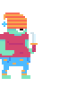

Home — Video Game
A small scale platforming adventure game designed in Photoshop & coded using HaxeFlixel.
Play the game ⇢



Caffeine – Concept Art
Preliminary animation and layout ideas for a small game about coffee.
Brewstar – The game of coffee concoctions
A 4-player board game designed for Game/Play at MICA. Game mechanics developed in collaboration with Liz McGreevy. A central spinner houses a pool of 16 customers, all with specific beverages they will pay for and beverages that will claim them as "regulars." Players take turns brewing beverages according to a given recipe guide in order to claim as many regular customers as possible, all while managing their resources to buy more ingredients and steal regulars from other players.
Mouse Trap
A piece created to bring old, "abandoned" childhood games into the digital age.